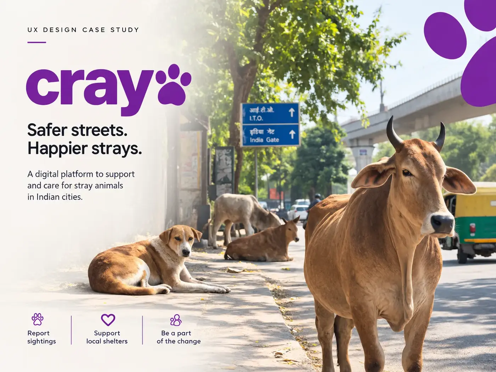
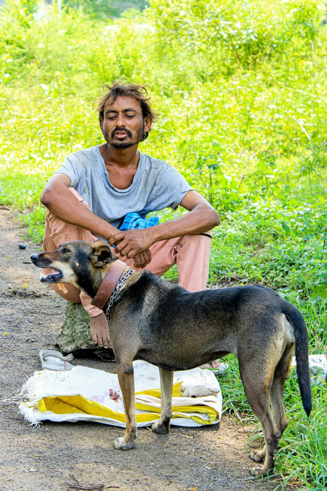
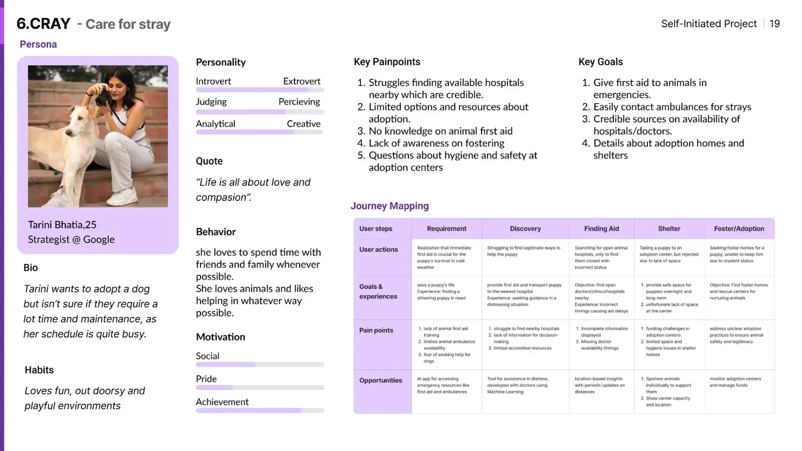
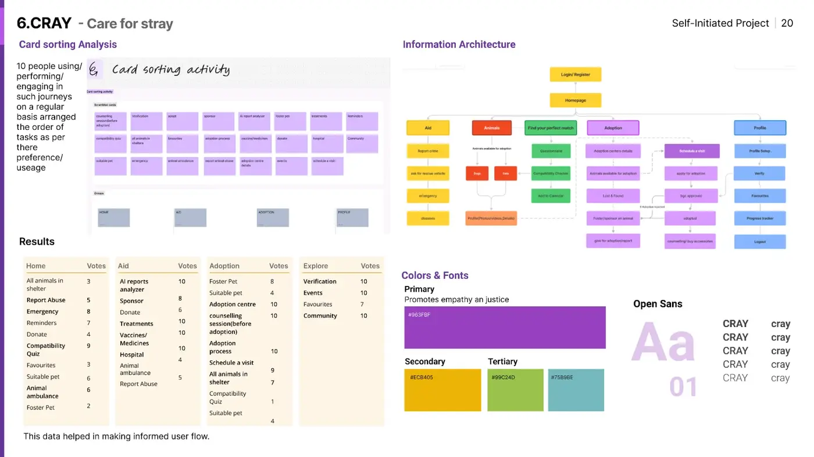
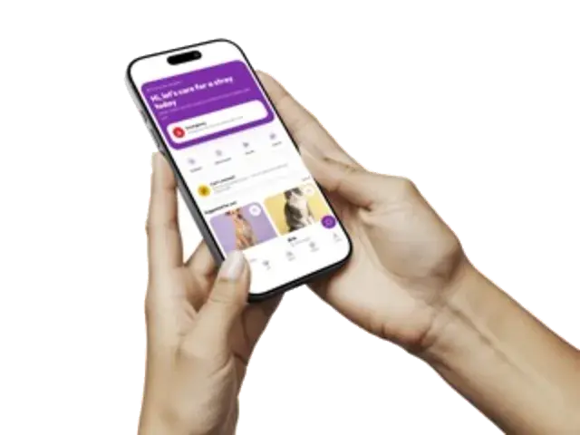

Case study 05 · CRAY Self-initiated · Animal welfare · 2025
Designing one platform for stray animal care
People want to help strays but don’t know where to start. CRAY puts first aid, hospitals, fostering and adoption in one app.

Problem
People want to help strays but don’t know where to start, and adopted pets get abandoned.
Insight
Information, not intent, was the gap.
Solution
Foster first, a which-pet compatibility quiz, and one-tap aid.
Result
A live prototype, four fixes from testing, and an icon-led v2 for low-literacy users.
01 Why
Willing helpers, no clear path
It began with losing a stray I was attached to. I went down the rabbit hole of why: people at both extremes, those who go out of their way to help and those who harm, and animals that swing between trust and fear.
The aim: one platform for stray animal care that turns goodwill into action, from first aid to a forever home.
02 Research
People feed strays. Few know how to care for them.
My survey of people who feed and help strays showed that help exists but is hard to find.
One rescue, five stages
Tarun, a persona traced through one rescue, from a shivering puppy to a shelter.
| Stage | Pain | Opportunity |
|---|---|---|
| 1 Finding | Found a shivering puppy; no first-aid knowledge and no ambulance to call | One-tap emergency help: first-aid steps and ambulances |
| 2 Discovery | Couldn’t tell which nearby hospitals were real or open | A trusted list of vets and hospitals, built with doctors |
| 3 Finding aid | Arrived to find clinics closed; listed timings were wrong | Live, location-based hospital hours |
| 4 Shelter | Turned away: no space, little funding | Sponsor an animal, and show shelter capacity up front |
| 5 Foster or adopt | Couldn’t keep the puppy; no foster homes to turn to | Foster before adopting, with checked and monitored centres |


03 Structure
Helpers sorted the app for me
A card sort gave the app its four tabs: Home, Aid, Adoption and Explore. “All animals in shelter” was placed under Home by 3 of 10 participants but under Adoption by 9, so it moved. Rarely placed cards were merged or dropped.


04 Solution
Foster first. Adopt second.
Abandonment starts with a bad match. CRAY slows the decision down without losing the person.
Foster first
Adoption starts as a foster period. People live with the animal before they commit, and can step back without abandoning it.
Which pet?
A short quiz about home, routine and budget suggests the right animal, and scores compatibility so the shelter sees the fit too.
Aid
A symptom scan, a live hospital list and ambulance calls for the moment someone finds an injured animal.

05 Testing
Four testers, four fixes
Four people used the prototype on their own phones, each on one task.
| Tester | Task | What they said | Fix |
|---|---|---|---|
| Kanika, designer at TCS | Report an injured stray | “I hit the emergency button by mistake.” | Moved it away from the main actions and added a confirm step |
| Nikhil, pet owner | Set up a profile | “Can it work in regional languages?” | Language switch added to onboarding |
| Geetanjali, pet owner | Sponsor a stray | “I couldn’t find how sponsoring works.” | Guidelines now sit on every sponsor card |
| Khushi, looking to adopt | Find an NGO to adopt from | “I want to learn about what specific NGOs are doing.” | NGO profiles added to Explore |
06 Reflection
Not everyone reads the screen
I built the whole app in English without thinking twice, and that assumption showed my privilege. Testing showed that not every user reads English, or reads at all. V2 adds regional languages and leans on icons, imagery and voice instead of text-heavy screens.
Next: run the compatibility quiz with a shelter, and measure how many fosters turn into adoptions against how many animals are returned.
Next case study · 06
Birdsong →